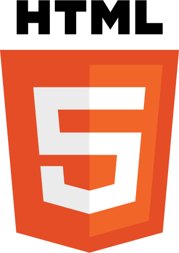
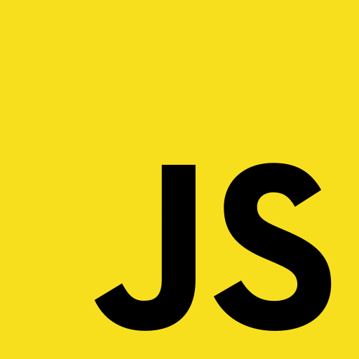

Ressources
Logiciels
Les logiciels utilisés pour le projet sont :
- Python3
- Anaconda
- Notepad++
- Firefox
Langages de programmation
Les langages de programmation utilisés pour le projets sont :
-
Python

-
HTML5

-
CSS
-
JavaScript

Sitographie
Sites internet utilisés :
- https://developer.mozilla.org/fr/
- https://www.w3schools.com/
- https://www.python.org/